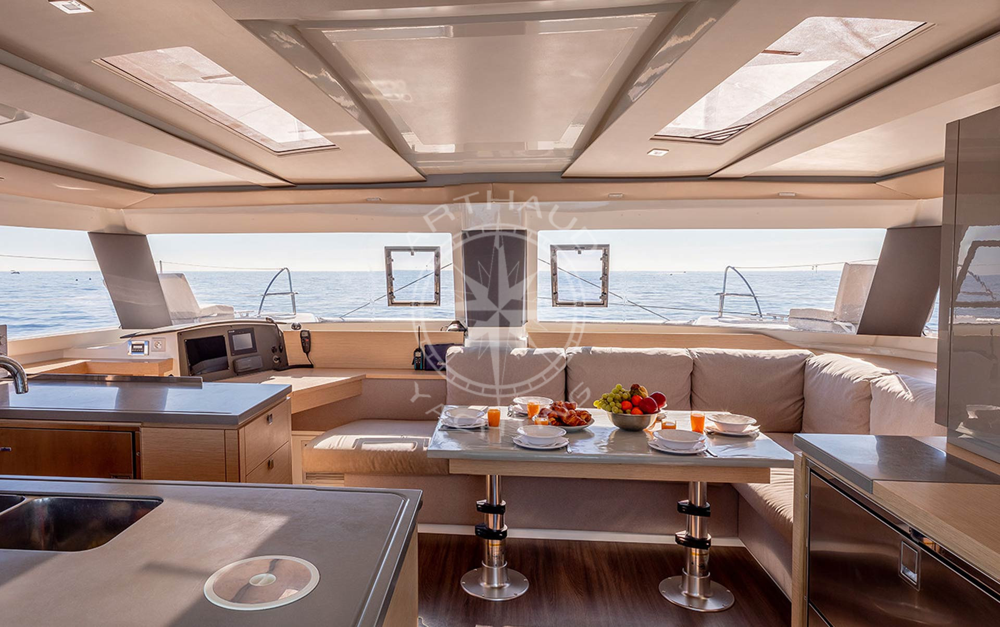
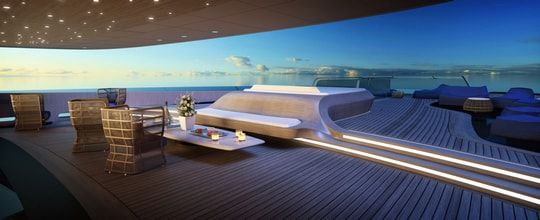
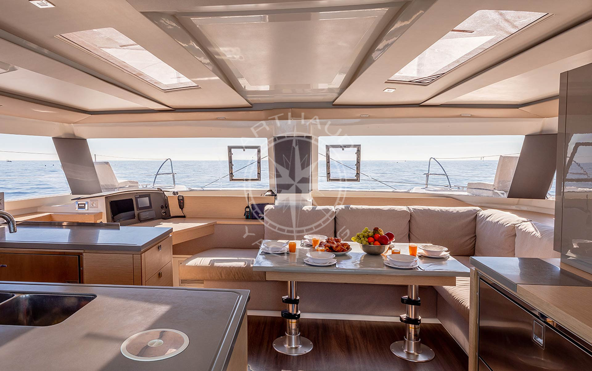
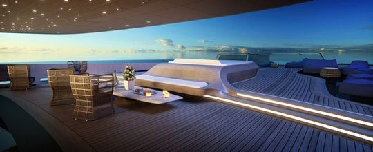
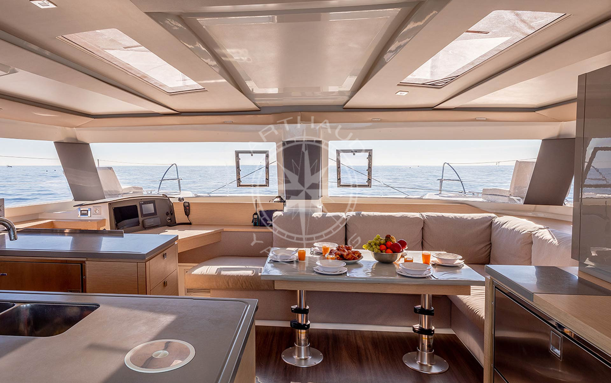
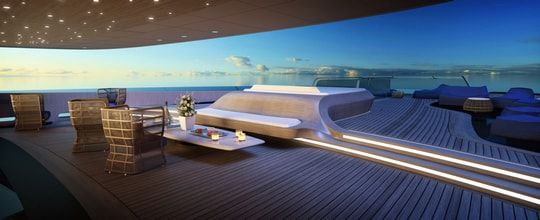

Nos mariés vous invitent à la cérémonie de mariage qui aura lieu: à 10h30 au manoir "Rocabella" de la vicomtesse de la Reynerie à Toulon, située à une centaine de mètres de la plage.
La cérémonie devra prendre fin aux alentours de 12h.
La fête de mariage aura lieu dans le grand jardin du manoir, dans lequel il y'aura une piscine (Il faudra alors préparer le maillot de bain !).
Durant le repas, les invités pourront contempler le magnifique coucher du soleil qu'offre la vue depuis le jardin.
Et si vous pensez que la garden-party sera déja assez bien, nos mariés vous ont prévus une deuxième journée pour que vous profitiez pleinement de ce week-end.
La deuxième journée se déroulera au bord du luxueux yacht de la vicomtesse de la Reynerie.
Ce yacht est la fierté de la mariée et c'est pourquoi elle tenait tant à vivre ce magnifique évènement à son bord.
A bord de ce yacht, nous avons une piscine en intérieur comme en extérieur, le lieu de réception pour le cocktail et pour le repas, ainsi qu'une salle spacieuse où les enfants pourront s'amuser.


Au programme, nos mariés ont prévus divers activités, aussi bien pour les adultes que les petits, pour que ceux qui ressenteraient l'envie de bouger.
Ils vous ont préparés des activités conviviaux et amusants tels que: une activité rugby dans le jardin (pour le mari et ses collègues qui seront invités), du kayak en mer, du voile aussi...